Repositório de Dados no Entity Framework 6
Renato Haddad
Março, 2014
O objetivo deste artigo é ilustrar como criar um Repositório de Dados no Entity Framework 6 com classes em Visual C# 5. O uso de repositório é antigo, diversas tecnologias usam, e pesquisando na internet encontrei diversos exemplos pobres em funcionalidades, muitas vezes alguns que torna o trabalho do desenvolvedor muito braçal, e ao longo do projeto, compromete a produtividade. Sendo assim, ao longo de anos do EF e algumas conversas com o Rowan Miller, Program Manager do EF na MS/EUA, resolvi escrever este artigo para ajuda-los a montar uma arquitetura genérica de repositório de dados.
Em alguns momentos críticos de um projeto, uma decisão de qual caminho seguir é fundamental. Isto vale para qualquer tipo de projeto, e em TI vale desde uma simples planilha no Excel até projetos complexos de E-Commerce. E, quando adicionamos o uso de banco de dados, projeto em equipes (centralizadas ou não), começa a ficar crítico. Isto sem falar em outras variáveis como extensibilidade, camadas de dados, persistência, outras plataformas, etc. Enfim, o projeto que irei criar será uma solução com diversos projetos separados, a fim de focar em cada camada.
Os pré-requisitos para este artigo são conhecimento intermediário de C# e o Visual Studio .NET 2013.
Solução Repositório
A primeira coisa a fazer é criar uma solução vazia. Para isto, abra o Visual Studio 2013, selecione a opção File / New / Project ou CTRL + SHIFT + N ou na janela inicial, clique em New Project. Conforme a figura 1, selecione Other Project Types / Visual Studio Solutions. Em Name digite Repositorio.MSDN e no Location você pode gravar onde desejar.
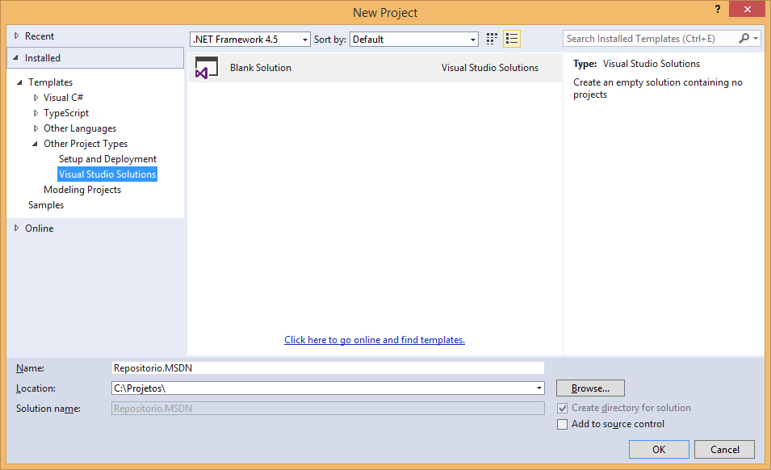
Figura 1 – Nova solução
Clique no botão OK e note no Solution Explorer que existe apenas a solução vazia. Quando falamos de repositório de dados, a primeira coisa que pensamos são as entidades, ou seja, a estrutura das classes, o que normalmente serão espelhadas em tabelas no banco de dados. Aqui, você pode abstrair diretamente do banco de dados utilizando o recurso do Model First do Entity Framework ou usar o fantástico recurso de Code First. Mas, se neste projeto pretendo ter somente as entidades, não é certo pensar que a string de conexão com o banco de dados estará neste projeto. E, é verdade, neste projeto de DLL (Class Library) não teremos nada referente ao local onde as entidades estão armazenadas. Para isto, criarei um projeto de DAL (Data Access Layer), o qual usará as entidades que criaremos aqui.
Sendo assim, no Solution Explorer, clique com o botão direito e selecione Add / New Project. Conforme a figura 2, selecione a linguagem Visual C# e o template Class Library. Em Name digite Repositorio.Entidades e o Location deixe como está.
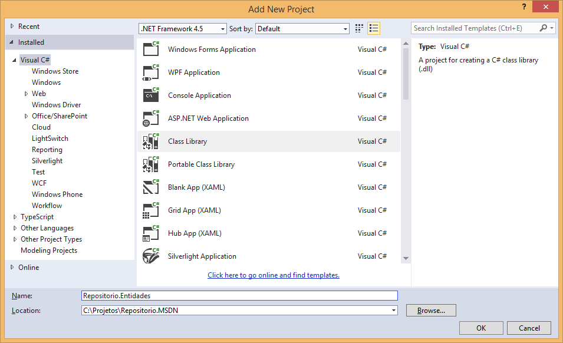
Figura 2 – Projeto de entidades
Clique no botão OK e deixe que o Visual Studio crie o projeto. Como é um projeto de Class Library, o VS já cria uma classe chamada Class1, portanto, exclua-a. Em seguida, crie uma classe (Add/Class) chamada Cliente, conforme a estrutura a seguir. Basicamente é uma classe pública contendo as propriedades do objeto Cliente. Nem preciso dizer que você pode adicionar ou remover propriedades conforme a necessidade.
namespace Repositorio.Entidades { public class Cliente { public int ClienteID { get; set; } public string Nome { get; set; } public string CNPJ { get; set; } public string Endereco { get; set; } public string Telefone { get; set; } public bool Ativo { get; set; } } }
Pergunta: Qual propriedade é a chave primária? No Entity Framework 6 se uma propriedade contém o nome da classe seguido de ID, esta será a chave primária. No caso da classe Cliente, a propriedade ClienteID será a chave. E, se eu quiser colocar outro nome, por exemplo ChaveCliente ou apenas ID? Aí você terá que usar o Data Annotations e informar o atributo [Key] para a respectiva propriedade.
Pronto, salve a classe e compile o projeto F6. Se houver algum erro nesta classe, corrija porque é necessário que o projeto esteja compilado 100% com sucesso.
O próximo passo é criar um novo projeto chamado Repositorio.DAL, o qual será o responsável por manipular a classe cliente criada. Sendo assim, no Solution Explorer, Add / New Project, escolha o template de Class Library. Em Name digite Repositorio.DAL e clique no botão OK, conforme a figura 3.
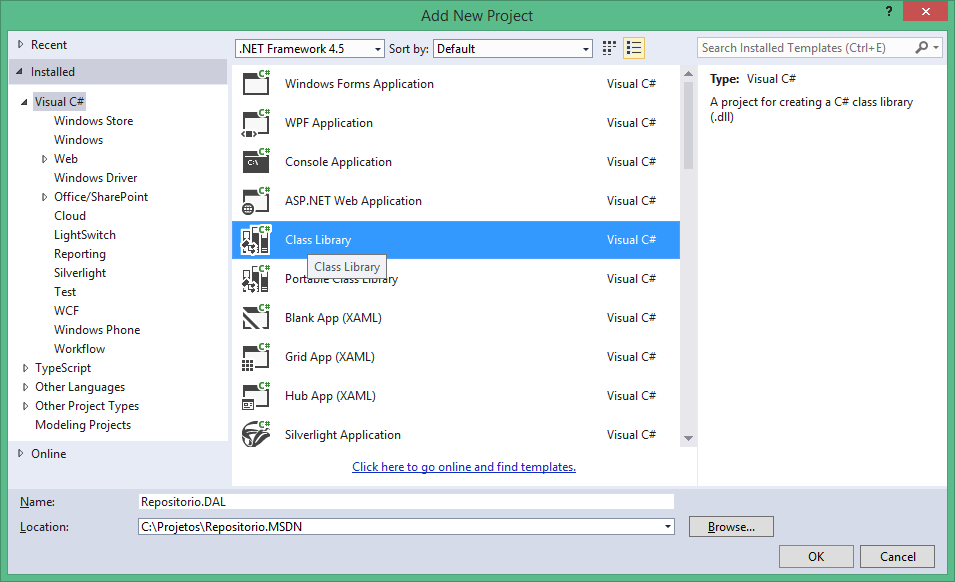
Figura 3 – Projeto de DAL
Da mesma forma que o projeto anterior, exclua a Class1.cs criada automaticamente. O primeiro passo é adicionar as referências necessárias. Vamos utilizar o fantástico recurso do Nuget para esta tarefa, portanto, selecione o menu Tools / Library Package Manager / Package Manager Console. Conforme a figura 4, será aberta a janela do Nuget, então na combobox Default project, selecione Repositorio.DAL, afinal temos dois projetos. Em seguida digite:
Install-Package EntityFramework
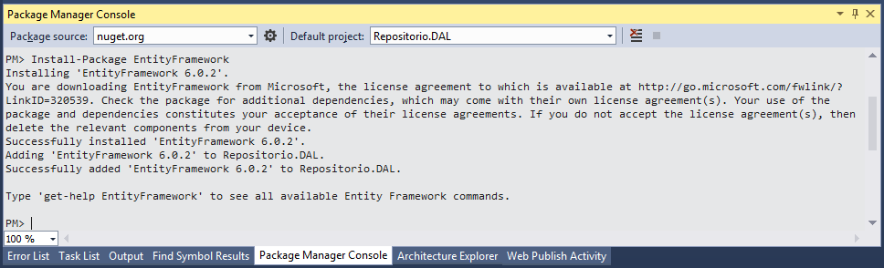
Figura 4 – Instalação do EF via Nuget
Desta forma o EF será instalado apenas neste projeto. Note ainda que a versão instalada é a 6.0.2, fato que é a mais recente no mercado no momento em que estou escrevendo este artigo. Não se assuste se for instalada uma versão superior do EF quando você for simular estes códigos.
Em seguida, no projeto Repositorio.DAL, clique com o botão direito em References no Solution Explorer, selecione Add Reference. Na janela aberta, selecione Assemblies, localize o namespace System.Data.Entity, conforme a figura 5. Ao final, clique no botão OK.
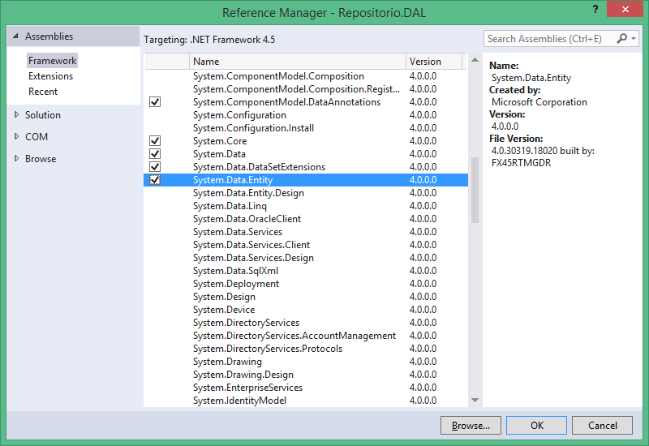
Figura 5 – Adicionar referências do namespace
Repita o mesmo passo, mas referencie o projeto Repositorio.Entidades, conforme a figura 6, afinal o DAL irá gerenciar as entidades.
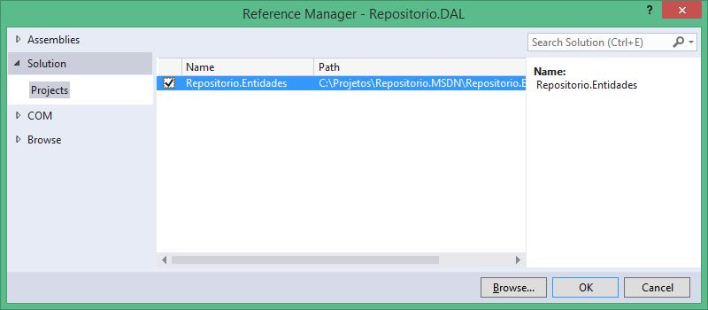
Figura 6 – Adicionar referências do projeto de entidades
Contexto
Excelente, já temos todas as referências necessárias. Pressione F6 para compilar com sucesso. Em seguida, por uma questão de estrutura e organização, crie as pastas Contexto, Repositorios e Base, sendo que a Base é dentro de Repositorios. Na pasta Contexto, crie uma nova classe chamada BancoContexto.cs. Adicione os seguintes namespaces:
using System.Data.Entity; using Repositorio.Entidades;
Esta será a classe de contexto, portanto, para que ela gerencie toda a parte de banco de dados (criar, excluir e gerenciar o DB) é preciso herda-la de DbContext. Sendo assim, na assinatura da classe, adicione o : DbContext.
Em seguida, precisamos informar qual será a string de conexão, afinal o banco ainda não existe, e mesmo que existisse, em algum lugar deverá estar o caminho completo da conexão, certo? Sendo assim, no construtor desta classe, adicione o : base(“chave”), sendo que a chave é exatamente o caminho da conexão que está descrito no arquivo App.Config ou Web.Config (se for ASP.NET). Mas atenção: no projeto Repositorio.DAL você NÃO deverá incluir esta chave no App.Config. Eu disse que a chave deverá constar apenas no projeto que irá solicitar o DAL.
Por default, chamei a chave de ConnDB e mantenha este nome para que possamos definir o padrão. Muitos chamam de strConn ou stringConexao ou ConexaoBanco, enfim, o importante é que você defina o seu padrão e passe para todos os projetos que a utilizarão.
Dica: o ConnDB não pode ser dinâmico? Sim, isto não é nenhum problema pois se você analisar o construtor do DbContext irá notar que há várias sobrecargas, as quais você pode construir o código para ser uma chave dinâmica.
Veja como está a classe até o momento:
using System.Data.Entity; using Repositorio.Entidades; namespace Repositorio.DAL.Contexto { public class BancoContexto : DbContext { public BancoContexto() : base("ConnDB") { } } }
Pressione F6 para compilar e certifique-se que está 100% com sucesso.
Interface da Classe
O que é uma interface de uma classe? Entendemos que interface é um contrato de como uma classe deve ser implementada, contendo todas as ações definidas, não as implementações de códigos de comportamentos. Um exemplo bem clássico é o famoso contrato de aluguel, o qual são definidos na interface (contrato padrão), os nomes do inquilino e proprietário, data de pagamento, multas, imóvel, etc. E, quando se redige o contrato do aluguel é que teremos os dados preenchidos em si.
No nosso caso, vamos criar na pasta Base uma interface chamada IRepositorio.cs, contendo todos os métodos que deverão ser implementados pela classe que usar esta interface como referência. Logo de cara, não se assuste com a assinatura da classe. Existe o TEntity declarado, assim como quem é, ou seja, neste caso TEntity é uma class. Veja o código a seguir.
using System; using System.Collections.Generic; using System.Linq; using System.Text; using System.Threading.Tasks; namespace Repositorio.DAL.Repositorios.Base { interface IRepositorio<TEntity> where TEntity : class { IQueryable<TEntity> GetAll(); IQueryable<TEntity> Get(Func<TEntity, bool> predicate); TEntity Find(params object[] key); void Atualizar(TEntity obj); void SalvarTodos(); void Adicionar(TEntity obj); void Excluir(Func<TEntity, bool> predicate); } }
Veja uma descrição detalhada dos métodos da interface para um melhor entendimento.
IQueryable<TEntity> GetAll(); | Retorna todos os dados como IQueryable, ou seja, você pode retornar a lista e aplicar expressões Lambda para filtrar e classificar dados, por exemplo. |
|---|---|
IQueryable<TEntity> Get(Func<TEntity, bool> predicate); | Retona todos os dados que atenderem a um critério passado em tempo de execução através de uma expressão Lambda. Neste caso, o Func é um delegate que será criado dinâmicamente, aplica-se o predicate para verificar se o dado atende ao critério. Aqui eu sei que dará um nó na cabeça, mas é preciso um conhecimento de C# avançado, então, pesquise sobre Delegates, Func e predicate. |
TEntity Find(params object[] key); | Irá aplicar um filtro pela chave primária da classe em si. Quem é a chave primária? Não importa porque o Find recebe um array de object e efetua a pesquisa. Com isto, se você tiver uma chave composta, o Find se encarrega de tudo, basta você passar os dados e pronto. |
void Atualizar(TEntity obj); | Recebe o objeto TEntity para efetuar o Update no banco. |
void SalvarTodos(); | Chama o método SaveChanges para efetivar todas as alterações no contexto. |
void Adicionar(TEntity obj); | Recebe o objeto TEntity para efetuar o Insert no banco. |
void Excluir(Func<TEntity, bool> predicate); | Este método irá excluir registros, sendo que a condição é dinâmica através de uma expressão Lambda e aplica-se o predicate para a condição passada. |
Agora que já temos a interface criada, vamos criar e implementar a classe. Portanto, na pasta Base, adicione uma classe chamada Repositorio. Adicione os seguintes namespaces:
using System.Data.Entity; using Repositorio.DAL.Contexto;
Veja a classe completa com todas as implementações. Note que a classe é abstract para que ela não possa ser herdada. Na assinatura TEntity também é uma classe (where TEntity : class). Note que esta classe herda outras duas interfaces, sendo IDisposable (para que possa suportar o Dispose) e IRepositorio<TEntity>. Quando você digitar estas heranças, o Visual Studio coloca uma notação em azul dizendo que não estão implementadas. Então, basta selecionar as classes (IDisposable e IRepositorio) e dar um CTRL + . (ponto) duas vezes. Toda a estrutura das interfaces serão criadas nesta classe.
A seguir, para cada método você deverá digitar os códigos de acordo com a funcionalidade. Uma coisa interessante que você deve estar questionando: como é que a classe sabe quando serão feitos os selects, updates, deletes e inserts? Pois é meu amigo, não é mágica não, são códigos dinâmicos que o Entity Framework implementa com o DbContext e DbSet. Cabe a nós informar a entidade e os critérios, o restante é com o compilador que irá executar.
Certa ocasião, um aluno me perguntou: Mas Renato, e as instruções T-SQL ou PL-SQL, onde as escrevo? Eu disse: você não escreverá nenhuma linha disso nunca mais, pois quem é o responsável em montar toda a instrução é o compilador, tudo agora é dinâmico. Nem preciso dizer que o olhar de interrogação ficou estampado no rosto da pessoa. E, você leitor, aprofunde-se nestes códigos para entender e tirar mais proveito ainda.
using System; using System.Collections.Generic; using System.Linq; using System.Text; using System.Threading.Tasks; using System.Data.Entity; using Repositorio.DAL.Contexto; namespace Repositorio.DAL.Repositorios.Base { public abstract class Repositorio<TEntity> : IDisposable, IRepositorio<TEntity> where TEntity : class { BancoContexto ctx = new BancoContexto(); public IQueryable<TEntity> GetAll() { return ctx.Set<TEntity>(); } public IQueryable<TEntity> Get(Func<TEntity, bool> predicate) { return GetAll().Where(predicate).AsQueryable(); } public TEntity Find(params object[] key) { return ctx.Set<TEntity>().Find(key); } public void Atualizar(TEntity obj) { ctx.Entry(obj).State = EntityState.Modified; } public void SalvarTodos() { ctx.SaveChanges(); } public void Adicionar(TEntity obj) { ctx.Set<TEntity>().Add(obj); } public void Excluir(Func<TEntity, bool> predicate) { ctx.Set<TEntity>() .Where(predicate).ToList() .ForEach(del => ctx.Set<TEntity>().Remove(del)); } public void Dispose() { ctx.Dispose(); } } } Aqui requer uma explicação mais detalhada dos métodos, afinal, a interface diz o método e a classe é que diz como o código será implementado.
O primeiro é a declaração do BancoContexto, já que tudo depende dele, nada mais justo que referenciá-lo.
BancoContexto ctx = new BancoContexto();
Já o método GetAll, simplesmente recebe a entidade em si, Cliente por exemplo, e retorna um IQueryable (lista) completa, um “Select *”.
public IQueryable<TEntity> GetAll() { return ctx.Set<TEntity>(); }
O método Get é o melhor de todos porque além de ser 100% dinâmico, você usa expressões Lambda o tempo todo. Sempre digo que todo desenvolvedor DEVE saber Lambda, pois sem isto não é possível viver de forma produtiva. Este método Get retorna também uma lista IQueryable, no entanto, o parâmetro de entrada é uma Func da entidade, Cliente por exemplo, o qual será passado o critério a ser aplicado no predicate. Nos bastidores, você deverá passar uma expressão Lambda, por exemplo “c => c.Nome.Contains("microsoft")”. Já na implementação, é chamado o método GetAll, explicado anteriomente, e aplica-se o filtro Where com a Lambda recebida na entrada.
public IQueryable<TEntity> Get(Func<TEntity, bool> predicate) { return GetAll().Where(predicate).AsQueryable(); }
Pergunta: Quantas vezes a classe vai ao banco de dados? Duas correto, pois primeiro executa o GetAll, vai no banco e retorna todos os dados, e em seguida vai no banco novamente para aplicar o Where, certo? Errado! A expressão Lambda é montada em sua árvore de expressões, e no momento em que irá ser usada ou retornada a quem chamou é que vai ao banco de dados. Neste caso o GetAll será um subterfújio para aplicar o predicate com o critério, ou seja, irá apenas uma vez ao banco de dados. O legal aqui é rodar este método com o Profile do SQL ativado para se ver a instrução T-SQL montada para isto.
O Find busca automaticamente pela chave primária, sendo que a entrada do parâmetro é um array de object, ou seja, pode ser apenas um campo ou um conjunto que compõe a chave composta.
public TEntity Find(params object[] key) { return ctx.Set<TEntity>().Find(key); }
O Atualizar recebe a entidade Cliente, por exemplo, e atribui o Modified para o EntityState, informando ao contexto que tal entidade foi modificada. Atenção: aqui não é feito nenhum Update no banco, pois quem é o responsável por isto é o SaveChanges do método Salvar.
public void Atualizar(TEntity obj) { ctx.Entry(obj).State = EntityState.Modified; }
O SalvarTodos chama o SaveChanges do contexto e efetiva todas as operações de Update, Insert ou Delete no banco de dados. O contexto do Entity Framework é uma forma de manipular dados na memória apenas, nada no banco de dados, portanto, você pode ter muitas entidades no contexto (até o limite da memória da máquina), sendo que cada entidade pode ter operações distintas de Update, Delete ou Insert. Deixe os dados na memória e quando precisar, chame o SaveChanges para efetivar fisicamente no banco.
Pergunta 1: Posso colocar 300 entidades no mesmo contexto no EF 6? Sim e deve, pois já fiz testes de performance em relação à quantidade de entidades no mesmo contexto, e não há nenhum problema de lentidão. Em projetos médios é comum ter muitas entidades no mesmo contexto, e isto até facilita o gerenciamento, pois basta um SaveChanges e pronto.
Pergunta 2: Mas não é aconselhável dividir as entidades em diversos contextos? No EF 6 não é preciso, pois o gerencimento do contexto em apenas um facilita muito. Já em versões anteriores era um problema sério. No EF 4 e 5 tive projetos em diversos contextos, o que causou um problema sério de união de contextos, transações em diferentes contextos e atualizações de entidades. Dica: migre urgente para o EF 6, no mínimo.
public void SalvarTodos() { ctx.SaveChanges(); }
O Adicionar recebe a entidade Cliente, por exemplo, e adiciona o registro através do método Add. Nos bastidores a instrução Insert será criada devidamente correta com todos os parâmetros declarados para proteger qualquer tentativa de injeção de SQL.
Pergunta 1: Posso incluir diversos objetos de uma vez? Sim e deve. Como tudo estará no contexto, ou seja na memória, vá incluindo quantos registros quiser em todas as entidades, e ao final chame o SalvarTodos apenas uma vez.
Pergunta 2: Se eu tiver uma lista de clientes a serem incluídos, preciso adicionar e salvar cada um? Quando se tem uma lista, você deve aplicar uma Action para disparar o ForEach a partir da lista, sendo que a Action será o delegate que irá chamar o Adicionar, passando cada um dos elementos da lista. Ao final de tudo é que chama-se o SalvarTodos apenas uma vez. Preste atenção mais adiante no projeto de Console, pois iremos incluir alguns clientes desta forma. E, prepare o balde para babar com o código. Prometo que os teus loopings nunca mais serão iguais, viva o C# 5!
public void Adicionar(TEntity obj) { ctx.Set<TEntity>().Add(obj); }
O Excluir na minha opinião é a melhor funcionalidade de conceitos aplicados até agora. O parâmetro de entrada é uma expressão Lambda que será usada no predicate. Pense da seguinte forma: desejo excluir os clientes da cidade=florianópolis ou ativo=false ou contém o nome=jose, enfim, quem monta a expressão é a situação, pois ela tem que ser dinâmica para se adequar ao momento. E, ao mesmo tempo, a implementação deverá atender a TODAS as situações. Sendo assim, o contexto ctx seleciona a entidade TEntity (cliente, por exemplo), aplica o filtro Where com a condição definida no predicate (expressão Lambda do parâmetro). Em seguida, é preciso aplicar o ToList para converter para uma lista. E, aí sim vem a glória do ForEach para varrer toda a lista e remover todos os itens que atenderem ao critério. Como que isto acontece nos bastidores? É simples (como se fosse), o compilador irá disparar um delegate para criar um método em tempo de execução, o qual irá excluir o item da lista. Ou seja, tudo ocorre em tempo de execução, dinamicamente com delegate.
Pergunta 1: Mas não posso usar o foreach normal ou o for? Sim, pode, mas o código ficará maior, com mais linhas, porém de fácil manutenção! Isto até que você se acostume com a sintaxe do ForEach da lista.
Pergunta 2: Posso ter dois métodos Excluir, um para excluir pela chave primária e outro genérico com parâmetros? Pode, porém não há nenhuma necessidade, pois este que criei já faz estas duas funções.
public void Excluir(Func<TEntity, bool> predicate) { ctx.Set<TEntity>() .Where(predicate).ToList() .ForEach(del => ctx.Set<TEntity>().Remove(del)); } O Dispose é usado para destruir o objeto instanciado na memória, isto é bem comum no .NET. public void Dispose() { ctx.Dispose(); }
Classe Repositório de Cliente
Nos passos anteriores criamos a interface e a classe repositório. Agora é preciso criar a classe de repositório de cada entidade. Como temos a classe Cliente, adicione uma nova classe chamada ClienteRepositorio na pasta Repositorio. Veja o código a seguir com as duas referências e a herança de Repositório<TEntity>.
using Repositorio.DAL.Repositorios.Base; using Repositorio.Entidades; namespace Repositorio.DAL.Repositorios { public class ClienteRepositorio : Repositorio<Cliente> { } }
Para efeito de acompanhamento, veja na figura 7 a estrutura do Solution Explorer até o momento com os dois projetos, pastas e classes.
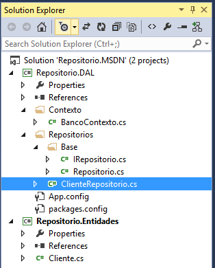
Figura 7 – Estrutura do projeto
Compile F6 o projeto e certifique-se que está 100% com sucesso.
Projeto de Console Application
Agora que já temos toda a parte de entidade e repositório definida, podemos iniciar os projetos que irão consumir estes outros dois. Vamos iniciar com um projeto para inserir clientes, utilizando um recurso que citei sobre lista com ForEach. No Solution Explorer, adicione um novo projeto do tipo Console Application chamado Repositorio.Console, conforme a figura 8.
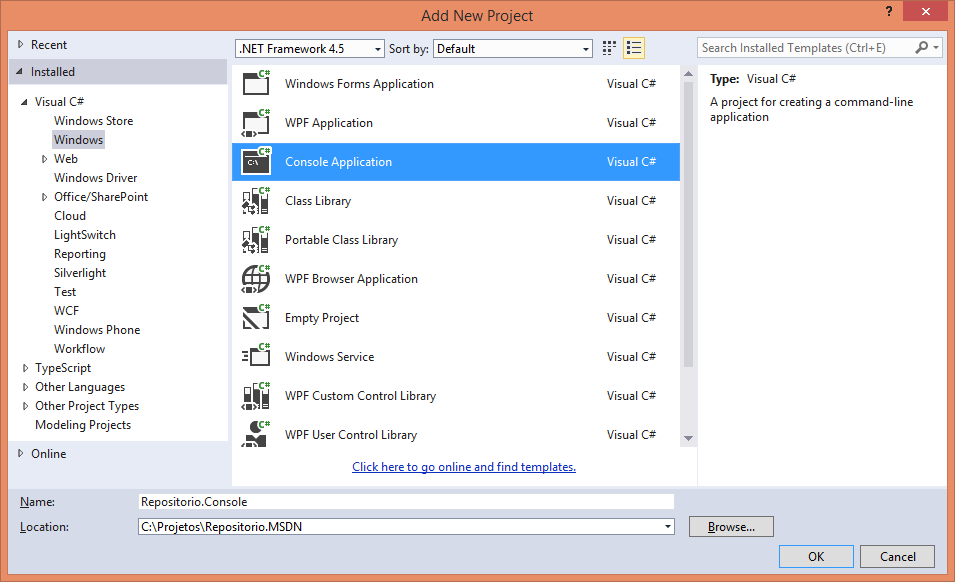
Figura 8 – Projeto de Console
O primeiro passo a fazer é adicionar as referências. Abra o Package Console Manager, na combobox de Default project, selecione Repositorio.Console e na linha de comando, digite a seguinte linha para instalar o Entity Framework 6.
PM> Install-Package EntityFramework
Pronto, agora resta adicionar as referências aos outros dois projetos, conforme a figura 9.
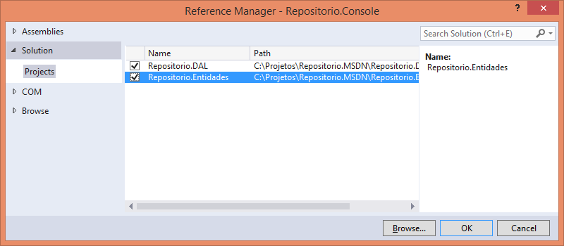
Figura 9 – Referências dos dois projetos
Aqui vai uma dica muito importante. Este projeto de Console é o que irá consumir o repositório, portanto, neste projeto é preciso informar a string de conexão com o banco de dados. Para isto, abra o arquivo App.config, localize a tag <entityFramework> e antes desta, adicione as seguintes linhas:
<connectionStrings>
<add name="ConnDB" connectionString="Data Source=localhost;Initial Catalog=BancoRepositorio;Integrated Security=True" providerName="System.Data.SqlClient" />
</connectionStrings>
Note que a chave chama-se ConnDB, e por favor não digite diferente porque o DbContext lá no projeto de repositório procura por este nome. Já em connectionString você deve fornecer o caminho completo de onde pretende criar o banco de dados no SQL Server. Sendo assim, caso tenha usuário e senha, forneça-os. Salve e feche este arquivo.
Em seguida, abra o arquivo Program.cs, adicione os seguintes namespaces. Sendo assim, já temos acesso ao repositório e a entidade Cliente.
using Repositorio.DAL.Repositorios; using Repositorio.Entidades;
O único método estático Main já existe, portanto, adicione uma chamada para um método Adicionar, assim como o código do mesmo.
namespace Repositorio.Console { class Program { static void Main(string[] args) { Adicionar(); } private static void Adicionar() { using (var repClientes = new ClienteRepositorio()) { new List<Cliente> { new Cliente { Nome="Microsoft", Ativo=true, CNPJ="9394.4343/0001-55", Endereco="1, Microsoft One", Telefone="11574739494"}, new Cliente { Nome="Google", Ativo=true, CNPJ="1234.9494/0001-33", Endereco="12, Santa Clara, CA", Telefone="1185858483"}, new Cliente { Nome="Oracle", Ativo=true, CNPJ="9876.4433/0002-44", Endereco="54, Santa Monica", Telefone="4884848592"} }.ForEach(repClientes.Adicionar); repClientes.SalvarTodos(); System.Console.WriteLine("Clientes adicionadas com sucesso."); System.Console.WriteLine("======= clientes cadastrados ==========="); foreach (var c in repClientes.GetAll()) { System.Console.WriteLine("{0} - {1}", c.ClienteID, c.Nome); } System.Console.ReadKey(); } } } }
Vamos a explicação detalhada do método Adicionar. Como o repositório suporta o Dispose (nós implementamos), podemos usar o using, assim quando for encontrado o fechamento das chaves do using, o objeto já é liberado e destruído da memória. O using faz um referência ao ClienteRepositorio, o qual foi atribuído à variável repClientes. Em seguida é montada uma lista com Generics (List<T>) onde monto três objetos do tipo cliente. Em seguida, como é uma lista, há o ForEach disponível que irá disparar uma Action para um delegate dinâmico. Este delegate vai chamar o método Adicionar do repositório repClientes. O melhor de tudo é que isto será criado em tempo de execução.
Pergunta: Posso criar um foreach comum? Sim, você pode criar um foreach comum, varrer toda a lista de elementos de clientes, e para cada iteração, você chama o Adicionar do repositório. Mas, convenhamos, melhore o seu código e muito com o Action que dispara o delegate.
Ao final, todos os clientes estarão apenas na memória, nada de banco de dados. Então, cabe chamar o método SalvarTodos para efetivar a inclusão no banco fisicamente. Uma vez incluídos, para ter certeza disto, criei um código para chamar o método GetAll e listar os IDs e nomes dos clientes.
Pressione F6 para compilar e certifique-se que tudo esteja 100% com sucesso. O próximo passo é executar este projeto de Console. No entanto, na lista de projetos o de Console não está em negrito, significando que quando você pressionar F5, o projeto em negrito é que será executado. Então, clique com o botão direito no projeto de Console e selecione Set as StartUp Project. Agora sim, pressione F5 e aguardo a execução onde o banco de dados será criado na hora. Veja na figura 10 que os clientes foram cadastrados com sucesso, pois estão listados.
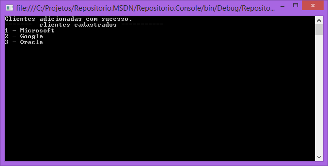
Figura 10 – Clientes cadastrados
Não execute novamente senão os mesmos clientes serão adicionados. Comente a linha da chamada do método Adicionar no Main para evitar de cadastrar tudo novamente. Este foi o primeiro teste somente para cadastrar alguns dados.
Agora, veja um teste de como criar uma expressão Lambda e passa-la como critério para o método de Excluir dados. No Main, crie uma chamada para o método ExcluirVariosClientes, assim como o respectivo código.
static void Main(string[] args) { //Adicionar(); ExcluirVariosClientes(); } private static void ExcluirVariosClientes() { using (var repClientes = new ClienteRepositorio()) { new List<Cliente> { new Cliente { Nome="Renato Haddad", Telefone="48575757"}, new Cliente { Nome="Renato Marcantonio", Telefone="55929292"}, new Cliente { Nome="Renato Jose", Telefone="77565644"} }.ForEach(repClientes.Adicionar); repClientes.SalvarTodos(); System.Console.WriteLine("Clientes Renato's adicionados"); // lista todos os clientes foreach (var c in repClientes.GetAll()) { System.Console.WriteLine(c.ClienteID + " - " + c.Nome); } // excluir vários clientes Renato try { repClientes.Excluir(c => c.Nome.StartsWith("Renato")); repClientes.SalvarTodos(); System.Console.WriteLine("clientes excluidos com sucesso"); } catch (Exception) { System.Console.WriteLine("erro ao excluir um cliente"); } System.Console.ReadKey(); } }
Neste código basicamente adiciono três clientes que iniciam com o texto Renato, salvo no banco e listo todos para comprovar que foram cadastrados. E, o melhor vem agora na chamada do método repClientes.Excluir. Só para relembrar como está o método, veja o código a seguir. A entrada é uma Func que espera uma expressão Lambda a ser passada ao método de extensão Where do predicate que irá disparar o delegate do ForEach para executar a exclusão dos itens que atendem ao critério.
public void Excluir(Func<TEntity, bool> predicate) { ctx.Set<TEntity>() .Where(predicate).ToList() .ForEach(del => ctx.Set<TEntity>().Remove(del)); }
E qual critério? Neste caso são todos os clientes cuja propriedade Nome inicia (StartsWith) com “Renato”. Ou seja, serão excluídos os três clientes que inclui de teste anteriormente. Cabe dizer que o critério é dinâmico e você pode usar todo o que for suportado pelo C#.
c => c.Nome.StartsWith("Renato")
E, para finalizar, como o Excluir foi chamado, é preciso invocar o SalvarTodos para efetivar a exclusão dos dados no banco. Pronto, pressione F5 novamente para salvar, compilar e executar o projeto. Caso queira abrir o banco de dados, use o Server Explorer, conforme a figura 11.
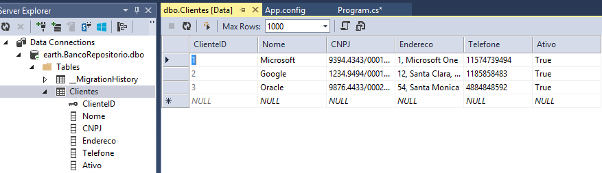
Figura 11 – Clientes no banco
Projeto ASP.NET MVC 5
Para ilustrar o consumo do repositório em um projeto MVC 5, crie um novo projeto do tipo Web / ASP.NET Web application, chamado Repositorio.MVC, conforme a figura 12.
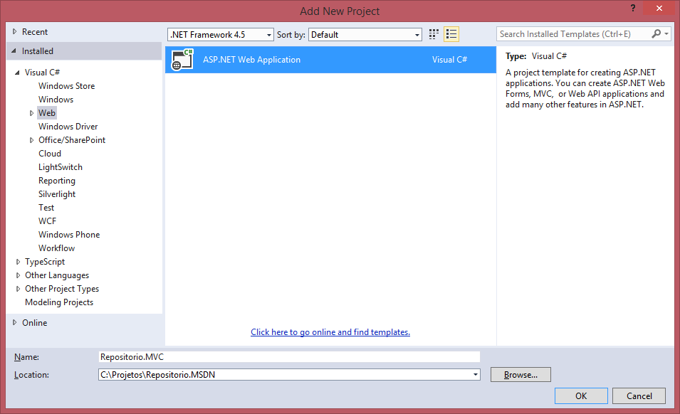
Figura 12 – Novo projeto Web
Clique em OK e selecione o template MVC, conforme a figura 13. Veja que não coloquei nenhuma autenticação, pois não é preciso, iremos apenas consumir o repositório.
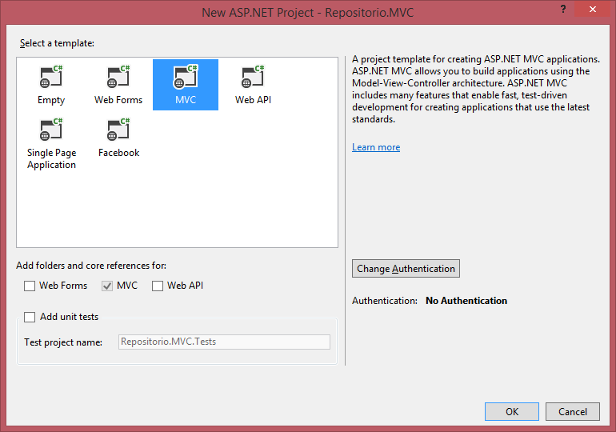
Figura 13 – Projeto MVC 5
Clique no botão OK e aguarde a criação do projeto completo. Logo de cara, deixe este novo projeto como default para execução, então, no Solution Explorer clique com o botão direito e selecione Set as Startup Project.
Agora, já instale o Entity Framework 6 via Nuget e adicione as referências aos projetos Repositorio.Entidades e Repositorio.DAL. Pressione F6 para compilar e certifique-se que está 100% com sucesso.
O próximo passo é referenciar a string de conexão que será usada no projeto de Repositório.DAL. Para isto, abra o arquivo Web.Config, localize a tag </configSections > e após esta tag, adicione o bloco a seguir. Atenção, não erre no nome da chave ConnDB, pois esta é a chave que o DAL irá procurar para localizar o banco de dados. Mais uma vez, nem preciso dizer que caso o seu SQL Server tenha autenticação, adicione o UserId e a Password, assim como o nome do servidor onde o banco está.
<connectionStrings>
<add name="ConnDB" connectionString="Data Source=localhost;Initial Catalog=BancoRepositorio;Integrated Security=True" providerName="System.Data.SqlClient" />
</connectionStrings>
Controller de Clientes
Um projeto MVC 5 é tão fácil de se criar todas as Views de CRUD, que há templates (scaffolds) prontos. E, a primeira coisa a fazer é criar o Controller de Clientes. Compile o projeto novamente F6. Na pasta Controllers, clique com o botão direito, selecione Add / Controller. Será aberta a janela de Scaffold (templates) conforme a figura 14, então selecione MVC 5 Controller with views, using Entity Framework.
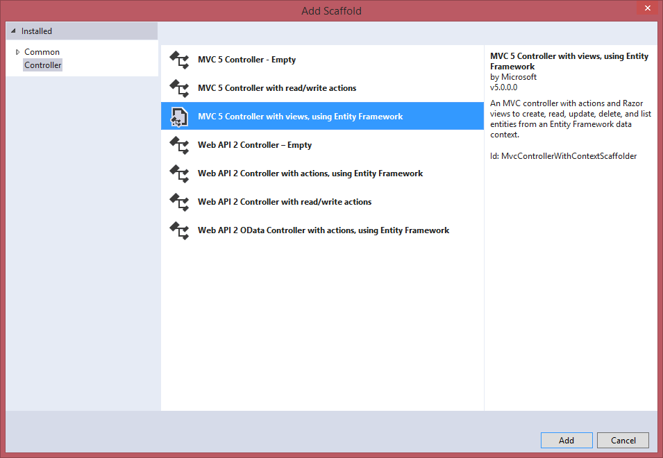
Figura 14 – Adicionar um controller usando o Entity Framework
Clique no botão Add e preencha os dados conforme a figura 15, sendo: Controller (Controller name) = ClientesController; Model class = Cliente; Data context class = BancoContexto.
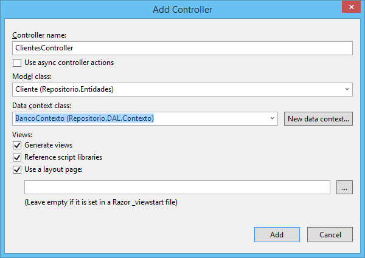
Figura 15 – Informações para o Controller
Clique no botão Add e aguarde o Visual Studio criar ClientesController e todas as Views (UI) para fazer o CRUD de dados.
Ajustes no Controller
Na pasta Controller tem o arquivo ClientesController.cs criado automaticamente usando o scaffold do MVC 5. No entanto, como temos o repositório é preciso fazer alguns ajustes. Sendo assim, no código a seguir, o que for default do MVC 5 eu coloquei como comentário, e o código que você deverá digitar está em seguida dos comentários. Basicamente é preciso retirar todas as referências do contexto e apontar para o ClienteRepositorio.
using System; using System.Collections.Generic; using System.Data; using System.Data.Entity; using System.Linq; using System.Net; using System.Web; using System.Web.Mvc; using Repositorio.Entidades; using Repositorio.DAL.Contexto; using Repositorio.DAL.Repositorios; namespace Repositorio.MVC.Controllers { public class ClientesController : Controller { // Troca o contexto //private BancoContexto db = new BancoContexto(); private readonly ClienteRepositorio repCli = new ClienteRepositorio(); // GET: /Clientes/ public ActionResult Index() { //return View(db.Cliente.ToList()); return View(repCli.GetAll().ToList()); } // GET: /Clientes/Details/5 public ActionResult Details(int? id) { if (id == null) { return new HttpStatusCodeResult(HttpStatusCode.BadRequest); } //Cliente cliente = db.Cliente.Find(id); Cliente cliente = repCli.Find(id); if (cliente == null) { return HttpNotFound(); } return View(cliente); } // GET: /Clientes/Create public ActionResult Create() { return View(); } // POST: /Clientes/Create // To protect from overposting attacks, please enable the specific properties you want to bind to, for // more details see http://go.microsoft.com/fwlink/?LinkId=317598. [HttpPost] [ValidateAntiForgeryToken] public ActionResult Create([Bind(Include="ClienteID,Nome,CNPJ,Endereco,Telefone,Ativo")] Cliente cliente) { if (ModelState.IsValid) { //db.Cliente.Add(cliente); repCli.Adicionar(cliente); //db.SaveChanges(); repCli.SalvarTodos(); return RedirectToAction("Index"); } return View(cliente); } // GET: /Clientes/Edit/5 public ActionResult Edit(int? id) { if (id == null) { return new HttpStatusCodeResult(HttpStatusCode.BadRequest); } //Cliente cliente = db.Cliente.Find(id); Cliente cliente = repCli.Find(id); if (cliente == null) { return HttpNotFound(); } return View(cliente); } // POST: /Clientes/Edit/5 // To protect from overposting attacks, please enable the specific properties you want to bind to, for // more details see http://go.microsoft.com/fwlink/?LinkId=317598. [HttpPost] [ValidateAntiForgeryToken] public ActionResult Edit([Bind(Include="ClienteID,Nome,CNPJ,Endereco,Telefone,Ativo")] Cliente cliente) { if (ModelState.IsValid) { //db.Entry(cliente).State = EntityState.Modified; repCli.Atualizar(cliente); //db.SaveChanges(); repCli.SalvarTodos(); return RedirectToAction("Index"); } return View(cliente); } // GET: /Clientes/Delete/5 public ActionResult Delete(int? id) { if (id == null) { return new HttpStatusCodeResult(HttpStatusCode.BadRequest); } //Cliente cliente = db.Cliente.Find(id); Cliente cliente = repCli.Find(id); if (cliente == null) { return HttpNotFound(); } return View(cliente); } // POST: /Clientes/Delete/5 [HttpPost, ActionName("Delete")] [ValidateAntiForgeryToken] public ActionResult DeleteConfirmed(int id) { //Cliente cliente = db.Cliente.Find(id); Cliente cliente = repCli.Find(id); //db.Cliente.Remove(cliente); repCli.Excluir(c => c == cliente); //db.SaveChanges(); repCli.SalvarTodos(); return RedirectToAction("Index"); } protected override void Dispose(bool disposing) { //if (disposing) //{ // db.Dispose(); //} repCli.Dispose(); base.Dispose(disposing); } } }
Pressione F6 para compilar o projeto, e caso tenha algum erro, corrija-o.
Views (UI interface de usuário)
Uma vez criado o Controller são criadas todas as Views do Cliente automaticamente, como você pode ver na pasta Views/Clientes na figura 16.
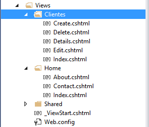
Figura 16 – Views do Cliente
Por se tratar de um projeto MVC 5, vamos fazer um ajuste para aparecer a opção Cliente no menu da View principal. Localize o arquivo _Layout.cshtml na pasta Views/Shared. Na lista de opções do menu adicione a chamada para Clientes.
<div class="navbar-collapse collapse"> <ul class="nav navbar-nav"> <li>@Html.ActionLink("Home", "Index", "Home")</li> <li>@Html.ActionLink("Clientes", "Index", "Clientes")</li> <li>@Html.ActionLink("About", "About", "Home")</li> <li>@Html.ActionLink("Contact", "Contact", "Home")</li> </ul> </div>
Pronto, o projeto já está finalizado utilizando todos os recursos de repositório de dados, em camadas e independentes para você testar cada camada individualmente. Para manutenção de qualquer código é muito mais fácil, produtivo e o melhor de tudo é que para um cenário de times médios e grandes, isto se aplica perfeitamente. Pressione F5 para salvar, compilar e executar a aplicação MVC 5. Conforme a figura 17, clique no menu Clientes para visualizar todos os clientes cadastrados.
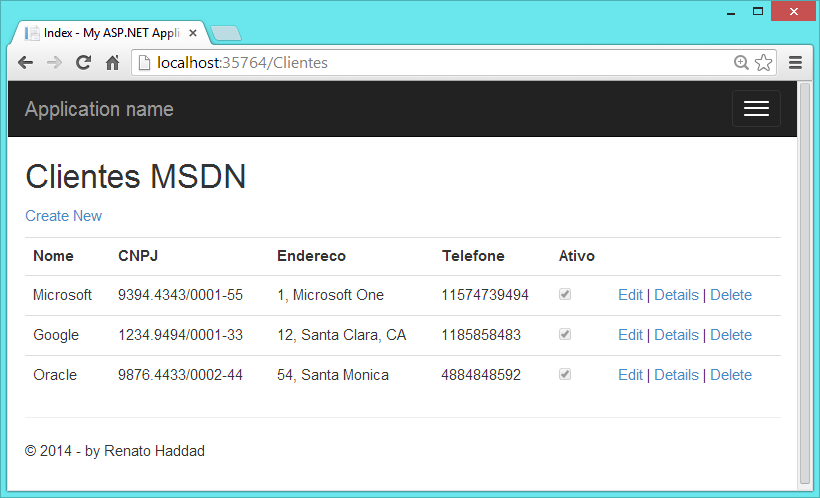
Figura 17 – Clientes cadastrados
Caso queira cadastrar um novo cliente, clique em Create New, ou então, em qualquer outra opção disponível para alterar, detalhes ou excluir. Veja a tela de cadastro na figura 18.
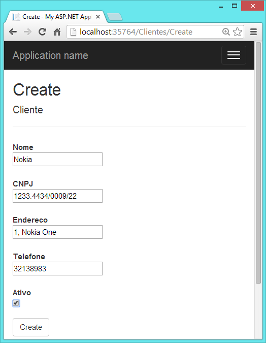
Figura 18 – Novo cliente
Eu sugiro você utilizar o breakpoint no Controller para identificar todo o caminho das camadas percorridas pelo código, afinal o Debug é fantástico pra isto.
Neste artigo criei apenas um projeto de Console e MVC 5, mas fique à vontade para criar qualquer outro tipo de projeto. E, caso necessite aplicar o repositório como serviço que retorne um JSON ou XML, crie um projeto de Web Api que referencia o repositório e pronto.
Conclusão
O uso de repositórios de dados tem sido usado em projetos de várias tecnologias, e em .NET demonstrei uma maneira que compartilho com todos os leitores, alguns códigos para que você possa implementar nos vossos projetos. Sei que é preciso estudar um pouco mais sobre códigos dinâmicos, actions, predicates, expressões lambda e o entity framework 6, mas isto é o que nos move para os desafios de criar projetos produtivos. Particularmente, sempre irei incentivar o estudo de novidades porque tenho certeza que há sempre o que se aprender e melhorar. Caso você tenha algum comentário ou queira compartilhar códigos com os desenvolvedores, faça isto com prazer e saiba que quanto mais você compartilhar, mais você receberá em troca, afinal é um processo natural de evolução.
Agradeço a oportunidade de poder compartilhar o conhecimento com todos. Qualquer dúvida e preparação de times de desenvolvimento, por favor me contate.
Sobre o Autor
Renato Haddad (rehaddad@msn.com – www.renatohaddad.com ) é MVP, MCT, MCPD e MCTS, palestrante em eventos da Microsoft em diversos países, ministra treinamentos focados em produtividade com o VS.NET 2012/2013, ASP.NET 4/5, ASP.NET MVC, Entity Framework, Reporting Services, Windows Phone e Windows 8. Visite o blog http://weblogs.asp.net/renatohaddad.